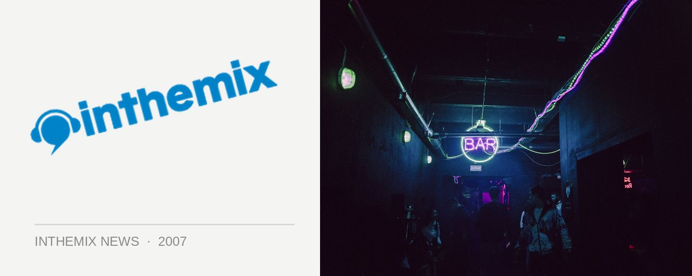

Trentemoller rocks it with a Sydney sideshow!
Trentemoller is locked for a highly anticipated live performance at the Ministry of Sound Annual party early next month, but fans of the revered Danish producer will be able to catch him with the full band in a sideshow at the Gaelic Club on Friday November 30th. And he’ll be supported by Jimi Polar, Jamie Lloyd Lloyd, Ken Cloud and Telefunken, some of the finest that Sydney has to offer basically!
While the Copenhagen producer has been involved in electronic music for around a decade, it was last year when he emerged to basically take full control of nightclubs around the world, pushing a completely distinct sound that crossed over electro, tech and progressive with a whole stack of his own productions. But it was his remix work that you would have heard again and again and again, delivering club-destroying takes on tunes like Röyksopp’s What Else Is There? and Moby’s classic Go. His album The Last Resort hit the stores last year to much acclaim and just recently saw the release of The Trentemøller Chronicles – a definitive collection of all his finest work.
Trentemoller will be playing live at The Gaelic Club on Friday November 30th, tickets are $38.50 and available now from ITM!